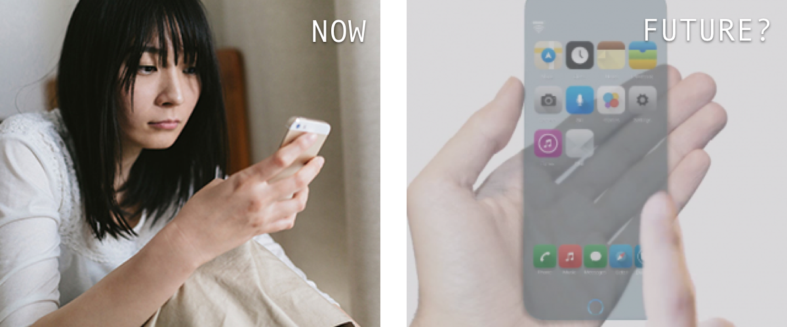
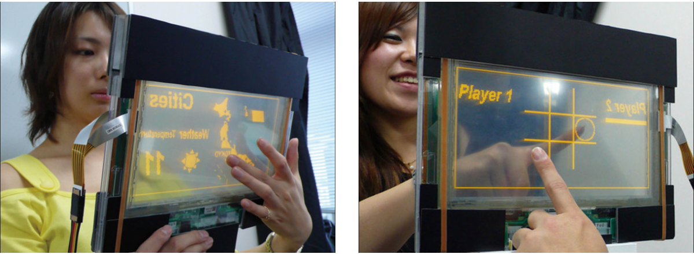
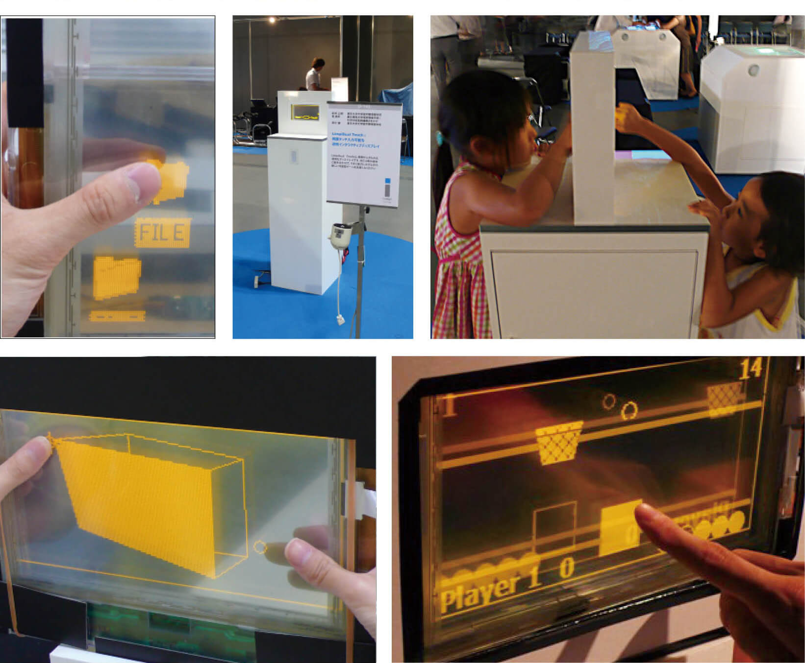
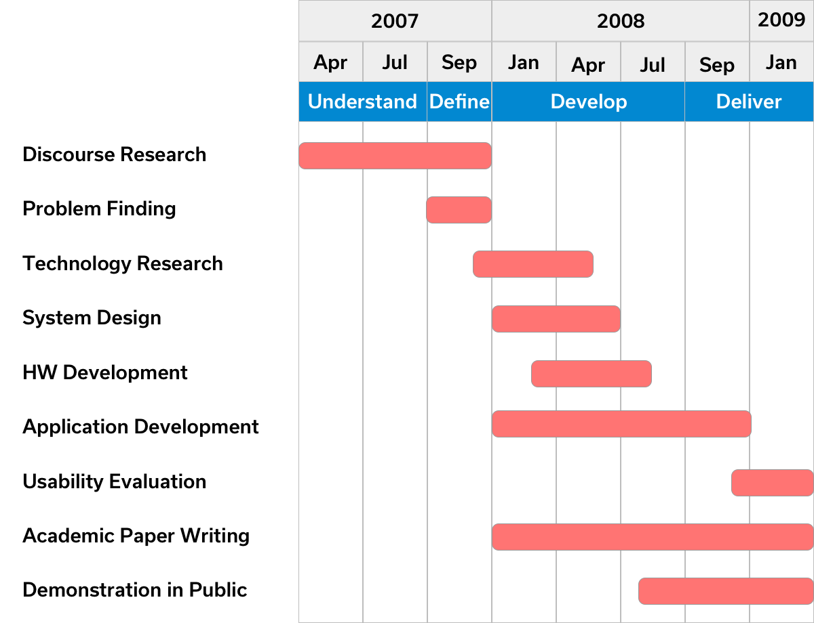
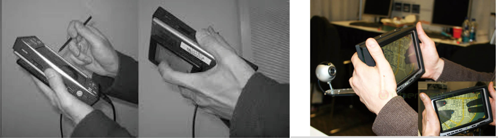
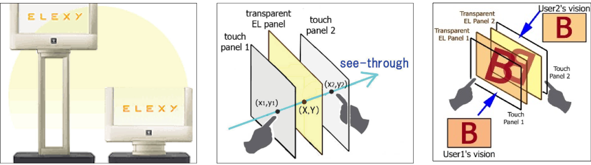
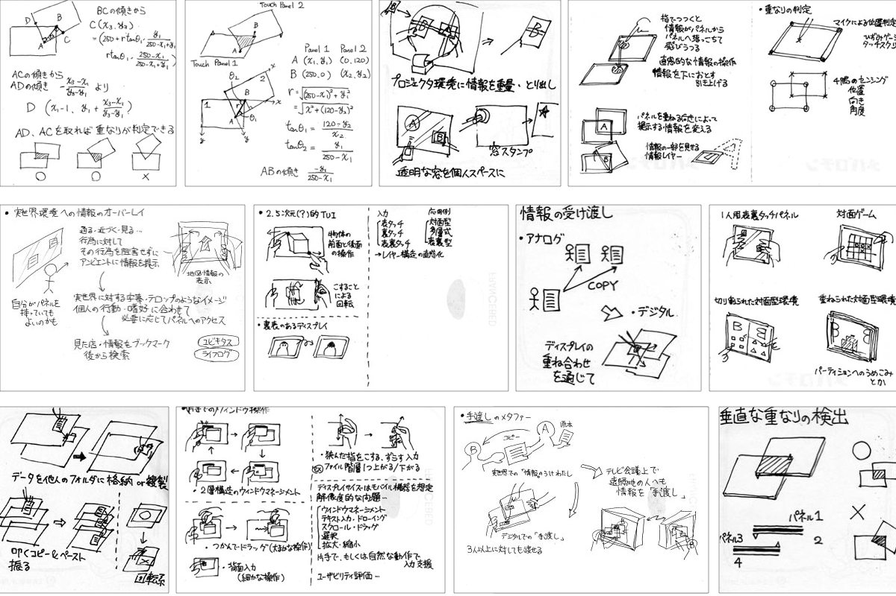
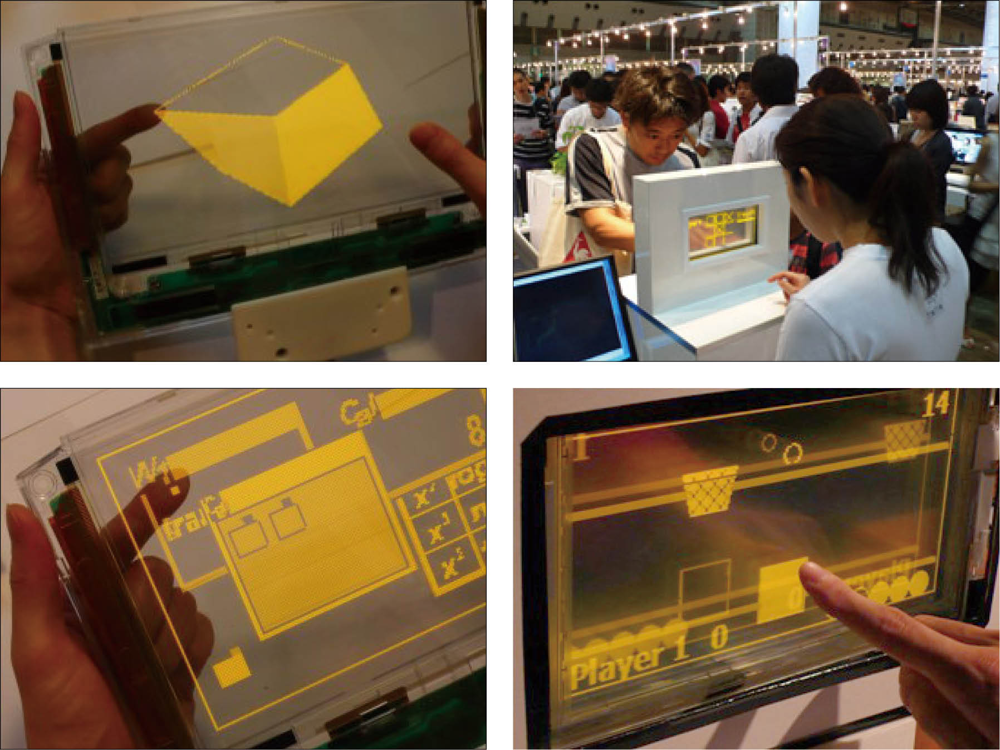

LimpiDual Touch is the emerging interactive transparent display. Users can operate from the rear side of the screen while seeing both displayed images and their fingers. This feature resolves a finger occlusion problem. Additionally, it also works for multiple users. Two users can share an identical display from both sides and control displayed objects at one time. This feature will apply to a collaborative work and an entertainment application.
LimpiDual Touch is the emerging interactive transparent display. Users can operate from the rear side of the screen while seeing both displayed images and their fingers. This feature resolves a finger occlusion problem. Additionally, it also works for multiple users. Two users can share an identical display from both sides and control displayed objects at one time. This feature will apply to a collaborative work and an entertainment application.
Professor: Takeshi Naemura (Professor of the University of Tokyo)
Method / Technology
Technology Research, Iterative Prototyping
Touch Interface, Non-Organic Transparent EL Display, OpenGL
Output
Research Paper, User Evaluation Sheet
Inspiration
What if we can display information on a transparent surface?
Direct-touch input enables intuitive operation, and touch panels have been mounted on various devices. However, finger occlusion becomes one of the problems when a user touches the display from the front side. Here, inspired from SF movies, one idea to solve this problem is to use “transparent” display. Additionally, we can imagine various scenarios if we can display information on a transparent surface.

Concept
Interaction from the rear side of the display
With transparent surface users can operate from the rear side of the screen while seeing both displayed images and their fingers. This feature resolves a finger occlusion problem. Additionally, this feature works for multiple users. Two users can share an identical display from both sides and control displayed objects at one time. It will apply to a collaborative work and an entertainment application.

Learning
Research through Design
During this period, I developed a strong belief that an effective interchange between theory and practice is essential to advancing society. I obtained transdisciplinary feedback from both academia and the public on my academic poster and demonstrations for LimpiDual Touch, which revealed to me that visualized emerging technologies harbored a powerful ability to stimulate user imagination. I was especially intrigued by new questions raised by viewers and attendees, such as whether all future devices would utilize rear side input, or how the user experience would change if glass were replaced by a transparent display. To me, these inquiries were more important than new ideas for practical applications for the technology.

Design Process
Research through Design

Discourse Research and Problem Finding
There have been several research projects that offer interactions by touching the rear surface of the device [Sugimoto and Hiroki 2006], [Wigdor et al. 2007]. However, the former prevents the user from seeing his hands; this sets up a new occlusion problem. As for the latter, the system size becomes large since a camera has to be attached outside the display. Our LimpiDual Touch has a simple hardware setting that allows the user to see his hands using an optically limpid display.
WIGDOR, D., FORLINES, C., BAUDISCH, P., BARNWELL, J., SHEN, C. 2007. LucidTouch: A See-Through Mobile Device In Proceedings of UIST 2007, 269–278.
SUGIMOTO, M. AND HIROKI, K., 2006. HybridTouch: An Intuitive Manipulation Technique for PDAs Using Their Front and Rear Surfaces In Proceedings of MobileHCI, 137–140.

System Design
We present the LimpiDual Touch, which enables dual-sided touch sensing while seeing user’s fingers optically. The following chart shows the system design of LimpiDual Touch. To achieve our purpose, we focused on the Teraoka “ELEXY”, non-organic transparent EL display (the degree of transparency is 80%). The ELEXY has 256 x 120 pixels and displays 4 levels of brightness in umber color.
We attached two transparent touch panels (Datamate, the degree of transparency is 80%) on both sides of it, and these three panels are well calibrated. Using this system, the user can control displayed images from the rear side as well as the front side of the display. LimpiDual Touch has following features.
The user can control information from the rear side of the display while optically seeing both the displayed images and their fingers. This characteristic can avoid the occlusion problem and brings new interactions by using both sides of the display.
The LimpiDual Touch also works effectively for multiple users. More than two users can share the identical display and simultaneously control displayed objects from both sides of without the fingers colliding.

Application Prototyping
We have created many idea sketches and developed two types of applications. One is for single user and the other is for two or more users facing across the display.

For single user, we implemented an application of layer manipulation. Information of mountains, regions and cities are overlaid on the map. The user can change the order of the layers by touching each side of the display, and select displayed additional information by touching specific points from the rear side of the display.
For multiple users, we implemented a “Tic-Tac-Toe” game application. In this application, players alternatively put marks (O or X) on a 3 x 3 grid. Two users can share the identical display while looking at the gestures or expressions each other. Such interactions between multiple users can be used for entertainment.
Development and Evaluation
I demonstrated this sytem in public exhibitions and received many feedbacks from public.
Future work will be focused on improving mobility and expanding applications. It would be also important to evaluate utility and to design a good size of the system.

Result
Honored by ACM SIGGRAPH
I’ve proposed the emerging interactive transparent display named ‘‘LimpiDual Touch’’. Also, I’ve proved both-sided input had significant difference compared to front-side input as for the accuracy of touch input. In 2008, LimpiDual Touch was selected for ACM SIGGRAPH Student Research Competition and won the Japan Good Design Award.
Awards & Honors
Selected for ACM SIGGRAPH Student Research Competition, 2008.
Good Design Award of Japan, 2008.
Young Researcher Award of Human Interface Society, 2009.
Publications
Masaki Iwabuchi, Yasuaki Kakehi, and Takeshi Naemura - “LimpiDual Touch, Interactive Limpid Display with Dual-sided Touch Sensing”, ACM SIGGRAPH2008 Posters, B156, Article no. 87 (2008.8). [ selected for Student Research Competition, ACM ]